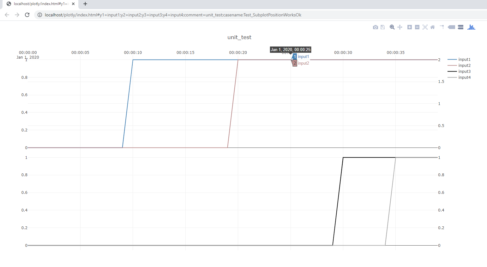

TimeSeriesAnalysis .NET class library
At a glance
TimeSeriesAnalysis is a .NET class library for making it easy to work with time series in .NET framework (written in C#). It handles typical tasks related to time-series analysis such as
- loading time-series data from CSV-files,
- manipulating time-series data as arrays and vectors,
- filtering out values by range, detecting and removing bad values, smoothing
- fitting static models to time-series data by linear regression(based on
Accord.NET), - fitting dynamic models to time-series by custom methods that build on linear regression, and
- plotting times-series (in a browser window with
plot.ly). - dynamic simulation of systems that may include interactions with PID-controllers (the library includes a reference PID-controller implementation).
The aim of this library is to make the process of working with time series as easy as possible, and the resulting work flow should be comparable to working in Matlab, Python or R.
This means that you can treat time series as vectors and matrices easily, without worrying about the arrays underneath, and perform operations like adding, subtracting, multiplying with vectors and matrices, as well as typical pre-processing tasks like selecting subsets of a larger dataset, removing spurious values, min/max range limits etc.
The result is a that tasks that you would normally do in for instance Matlab due to the perceived simplicity offered by the language, can now be accomplished in about the same amount of code in C#/.NET.
The benefit of doing this in C#/.NET
- that you get the benefits of a compiled type strict language, by writing your prototype code directly a language suitable for implementation, (unlike a prototype in some script languages). In some cases this may that you can avoid introducing Matlab code generator toolboxes which act as complex black-boxes, and often require expensive licenses.
- the resulting code does not require a paid license to run.
- you can easily extend your code to for instance run in parallel using the
paralell.forfunctionality freely available in .NET, wheres this functionality may require a very expensive toolbox in a script language.
Plotting capabilities
Note
This library is written to support test-driven development(TDD) of algorithms based on time-series, and to support the TDD workflow, it supports time-series plotting. This feature is extremely useful to visualize the results of of unit tests or acceptance tests, and this helps enormously with debugging. The unit tests of this repository, give an example of how you can use these plotting capabilities for your own testing.
Plotting features supported
- one or two subplots(stacked vertically)
- one or two y-axes on either subplot
- support for zooming in the plot,
- subplots x-axes are linked when zooming
- ability to turn trends on/off, which will cause auto-zoom to update
- ability to hover over trends to inspect values
- currently up to six trends can be plotted on a page in total(this can be increased if there is interest)
The plotting leverages the JavaScript framework plot.ly. Some JavaScript extensions have been made to this toolbox to allow time-series to seamlessly be exported from your .NET code to the browser.
Consider the unit-test PlotUnitTests.SubplotPositionWorksOk():
The code below is used to generate four "vectors", arrays of doubles, with a step change in each.
public void SubplotPositionWorksOk()
{
double[] input2 = Vec<double>.Concat(Vec<double>.Fill(0, 20), Vec<double>.Fill(2, 20));
double[] input1 = Vec<double>.Concat(Vec<double>.Fill(0, 10), Vec<double>.Fill(1, 30));
double[] input3 = Vec<double>.Concat(Vec<double>.Fill(0, 30), Vec<double>.Fill(1, 10));
double[] input4 = Vec<double>.Concat(Vec<double>.Fill(0, 35), Vec<double>.Fill(1, 5));
string plotURL = Plot.FromList(new List<double[]>{ input1,input2,input3,input4},
new List<string>{ "y1=input1","y2=input2","y3=input3","y4=input4"},1,
"unit test",new DateTime(2020,1,1, 0,0,0), "Test_SubplotPositionWorksOk");
}
Note
Note how the Vec.Fill() an Vec.Concat() of TimeSeriesAnalysis package is used in this example to create two vectors of a given
length and value and concatenate them in a single line of code.
The above code generates the following interactive plot in a Chrome-window(this window pops up automatically):

This plot has two subplots(one top, one bottom). Each subplot has both a left and a right axis:
the top subplot has axes y1 and y2 and the bottom subplot has axes y3 and y4.
By using the top left menu, it is possible to zoom and drag the plots, and the two subplots are linked,
meaning when you zoom in one of them, the x-axes of the other plot will zoom as well.
Moving the cursor over each plot allows the values to be browsed by an interactive scooter.
By clicking on the variable names in the legend on the top left, it is possible to disable plotting selected variables.
Note
Multiple plots will cause Chrome to display them in multiple tabs. A large number of figures can be generated and sorted in this way.